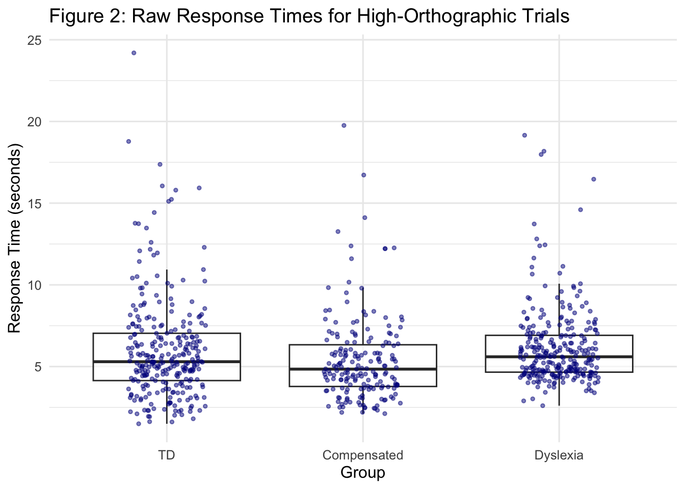

| Table 1: Distribution of Response Choices by Group | ||||
|---|---|---|---|---|
| Mean (SD) Number of Trials per Response Type (out of 18) | ||||
| Group | High Orthographic | Low Orthographic | Illegal | Unpronounceable |
| TD | 13.61 (1.9) | 4.26 (1.89) | 0.13 (0.34) | 0 (0) |
| Dyslexia | 12.5 (2.32) | 5.18 (1.83) | 0.25 (0.8) | 0.07 (0.26) |
| Compensated | 13 (2.85) | 5 (2.85) | 0 (0) | 0 (0) |
Orthographic Processing in School-age Children - Descriptive Statistics Eye Tracking Data
Brief Introduction
Orthographic awareness (OA) — the ability to recognize and evaluate letter patterns based on the rules and regularities of a writing system —is an important component of reading development. In alphabetic languages such as English, OA supports both decoding and word recognition by enabling readers to distinguish between more and less probable letter sequences. The current study investigates orthographic processing in school-age children (grades 3–6) across three groups: children with dyslexia (n = 28), children with compensated dyslexia (n = 17), and children with typical development (TD, n = 23). By examining how these groups differ in their orthographic decision-making, the study aims to better understand the mechanisms underlying persistent and resolved reading difficulties.
To assess OA, participants completed a visual world eye-tracking task in which they were asked: “Which word looks most like a real English word?” Each trial presented four non-word options that varied in orthographic probability and legality:
A high-probability (high-ortho) item resembling real English words,
A low-probability (low-ortho) item with less typical letter sequences,
An illegal item that violates English orthographic rules,
An unpronounceable item with no plausible phonological form.
Participants completed 18 trials, with option locations and trial order randomized. The task was administered using E-Prime with eye-tracking data collected concurrently.
This report investigates group differences across multiple dimensions of task performance, including:
Accuracy, based on criteria where high-ortho or both high/low-ortho selections are considered correct,
Response time when selecting high-ortho and low-ortho items,
Eye movement metrics, such as fixation count, proportion of fixations, total dwell time and proportion of dwell time
The relative attention (via dwell time) given to legal vs. illegal options.
Descriptive Statistics
1. Overall Response Choices Chosen across Groups
Table 1 and Figure 1 display the raw distribution of response choices across groups. All participants met the task accuracy inclusion criterion. The final sample included 23 children with typical development (TD), 28 with dyslexia, and 17 with compensated dyslexia.

On average, participants in all three groups most frequently selected the high-orthographic probability option, with TD children choosing this option on 13.61 of 18 trials (SD = 1.90), children with dyslexia on 12.50 trials (SD = 2.32), and the compensated group on 13.00 trials (SD = 2.85). The low-orthographic option was selected less frequently, while illegal and unpronounceable options were rarely chosen.
Df Sum Sq Mean Sq F value Pr(>F)
Group 2 0.6 0.3 0.058 0.944
Response_Type 1 2273.1 2273.1 452.509 <2e-16 ***
Group:Response_Type 2 26.3 13.1 2.616 0.077 .
Residuals 130 653.0 5.0
---
Signif. codes: 0 '***' 0.001 '**' 0.01 '*' 0.05 '.' 0.1 ' ' 1| Table 2: Two-Way ANOVA Results for High vs. Low Responses | |||||
|---|---|---|---|---|---|
| Dependent Variable: Number of Trials per Response Type (Max = 18) | |||||
| Effect | df | Sum Sq | Mean Sq | F | p |
| Group | 2 | 0.58 | 0.29 | 0.06 | 0.94 |
| Response Type | 1 | 2,273.06 | 2,273.06 | 452.51 | < .001 |
| Group × Response Type | 2 | 26.28 | 13.14 | 2.62 | 0.08 |
| Residuals | 130 | 653.02 | 5.02 | NA | NA |
Although participants had four response options (High, Low, Illegal, and Unpronounceable), the “Illegal” and “Unpronounceable” options were rarely selected across all groups. Hence, a two-way ANOVA was conducted including only the High and Low orthographic responses. The two-way ANOVA revealed a significant main effect of response type, \(F(1, 130) = 452.51\), \(p < .001\), indicating a clear preference for high probability orthographic words over low probability orthographic word options across groups. There was no significant main effect of group, \(F(2, 130) = 0.06\), \(p = .94\).
The interaction between group and response type was not significant, \(F(2, 130) = 2.62\), \(p = .08\), though this trend suggests potential group differences in response patterns that may warrant further investigation.
Inclusion Criteria for Eye Tracking Analyses
The following participant-level inclusion criteria were applied to ensure reliability in all eye-tracking analyses (response time, fixation count, dwell time):
Task Accuracy: Participants were required to correctly identify at least 67% of trials (≥12 out of 18), where both high and low orthographic responses were considered correct.
Visual Engagement: Participants needed to have at least 12 trials in which they visually fixated on all four response options (i.e., no fixation count of zero across any of the four interest areas).
This initial inclusion ensured that participants understood the task and were visually engaged with the stimuli.
Additional Inclusion for Specific Analyses
For analyses focused on response time and eye movement measures based on “High” response selections, the following additional criteria were applied:
Participant Inclusion: Participants were required to have at least 10 trials in which they selected the “High” orthographic response.
Trial Inclusion: Only trials in which the participant selected the “High” option were retained for analysis.
These additional filters ensured that group comparisons were based on a sufficient number of consistent “High” responses per participant, enabling more stable and interpretable estimates of response time and eye-tracking metrics.
2. Response time (RT) when High_ortho is selected
A total of 66 participants met the overall eye-tracking inclusion criteria (TD: n = 22, Dyslexia: n = 28, Compensated: n = 16). Of them, a subset of 52 participants were included in the response time analysis. Inclusion for this analysis required participants to have completed at least 10 trials in which they selected the “High” orthographic response.
The final response time sample included TD: n = 18, Dyslexia: n = 20, and Compensated: n = 14 participants.
Only trials in which “High_Ortho” was selected were retained for analysis. A total of 751 trials were included in the analysis, distributed across groups as follows: TD = 283 trials, Dyslexia = 281 trials, and Compensated = 187 trials. The number of included trials per participant ranged from 10 to 17 (out of a maximum of 18). Table 2 provides the five-number summary of high-response trials per participant, by group.
summary_by_group %>%
select(Group, Min, Q1, Median, Q3, Max, Mean) %>%
gt() %>%
tab_header(
title = "Table 2: High-Ortho Trials per Participant",
subtitle = "Five-number summary of included trials per participant by group"
) %>%
cols_label(
Group = "Group",
Min = "Min",
Q1 = "25th %ile",
Median = "Median",
Q3 = "75th %ile",
Max = "Max",
Mean = "Mean"
) %>%
fmt_number(columns = c(Min, Q1, Median, Q3, Max, Mean), decimals = 2) %>%
tab_options(
heading.title.font.size = 14,
heading.subtitle.font.size = 12
)| Table 2: High-Ortho Trials per Participant | ||||||
|---|---|---|---|---|---|---|
| Five-number summary of included trials per participant by group | ||||||
| Group | Min | 25th %ile | Median | 75th %ile | Max | Mean |
| Compensated | 10.00 | 11.25 | 13.00 | 15.00 | 17.00 | 13.36 |
| Dyslexia | 10.00 | 11.00 | 13.00 | 14.00 | 17.00 | 12.77 |
| TD | 10.00 | 11.00 | 13.00 | 14.00 | 17.00 | 12.86 |
library(dplyr)
library(gt)
# Set desired group order
high_rt_data <- high_rt_data %>%
mutate(Group = factor(Group, levels = c("TD", "Compensated", "Dyslexia")))
# Descriptive statistics of response time (converted to seconds)
rt_summary_seconds <- high_rt_data %>%
mutate(RT_sec = OrthoET_response_time / 1000) %>%
group_by(Group) %>%
summarise(
Mean = round(mean(RT_sec, na.rm = TRUE), 2),
SD = round(sd(RT_sec, na.rm = TRUE), 2),
Min = round(min(RT_sec, na.rm = TRUE), 2),
Q1 = round(quantile(RT_sec, 0.25, na.rm = TRUE), 2),
Median = round(median(RT_sec, na.rm = TRUE), 2),
Q3 = round(quantile(RT_sec, 0.75, na.rm = TRUE), 2),
Max = round(max(RT_sec, na.rm = TRUE), 2),
.groups = "drop"
)
# Display as a gt table
rt_summary_seconds %>%
gt() %>%
tab_header(
title = "Table 3: Descriptive Statistics for Response Time by Group",
subtitle = "All values in seconds for trials where the High ortho option was selected"
) %>%
cols_label(
Group = "Group",
Mean = "Mean",
SD = "SD",
Min = "Min",
Q1 = "Q1",
Median = "Median",
Q3 = "Q3",
Max = "Max"
) %>%
tab_options(
heading.title.font.size = 14,
heading.subtitle.font.size = 12
)| Table 3: Descriptive Statistics for Response Time by Group | |||||||
|---|---|---|---|---|---|---|---|
| All values in seconds for trials where the High ortho option was selected | |||||||
| Group | Mean | SD | Min | Q1 | Median | Q3 | Max |
| TD | 6.03 | 3.14 | 1.50 | 4.14 | 5.30 | 7.04 | 24.20 |
| Compensated | 5.41 | 2.61 | 2.12 | 3.78 | 4.84 | 6.33 | 19.76 |
| Dyslexia | 6.16 | 2.36 | 2.60 | 4.66 | 5.60 | 6.91 | 19.16 |
Response times were analyzed for trials in which participants selected the “High” probability orthographic non-word. Descriptive statistics by group are presented in Table 3. Response times were converted from milliseconds to seconds. On average, the Compensated group responded slightly faster (M = 5.41 s, SD = 2.61) than both the Dyslexia (M = 6.16 s, SD = 2.36) and TD (M = 6.03 s, SD = 3.14) groups. Median response times followed a similar pattern, with the Compensated group showing the shortest median latency (4.84 s), compared to Dyslexia (5.60 s) and TD (5.30 s).
A visual inspection of the raw response time data (Figure 2) revealed a small number of unusually long trials (e.g., exceeding 20 seconds), which could reflect momentary task disengagement or other non-task-related factors.
library(ggplot2)
ggplot(high_rt_data %>% mutate(RT_sec = OrthoET_response_time / 1000),
aes(x = Group, y = RT_sec)) +
geom_boxplot(outlier.shape = NA, alpha = 0.6) +
geom_jitter(width = 0.2, alpha = 0.5, size = 1, color = "darkblue") +
labs(
title = "Figure 2: Raw Response Times for High-Orthographic Trials",
x = "Group",
y = "Response Time (seconds)"
) +
theme_minimal(base_size = 12)
| Table 4: Winsorized Participant-Level Response Time Summary | ||||||||
|---|---|---|---|---|---|---|---|---|
| Each participant's mean RT calculated after trial-level winsorization (in seconds) | ||||||||
| Group | n | Mean | SD | Min | Q1 | Median | Q3 | Max |
| TD | 22 | 5.88 | 1.84 | 3.17 | 4.41 | 5.90 | 6.96 | 9.51 |
| Compensated | 14 | 5.38 | 1.60 | 3.05 | 4.43 | 5.10 | 6.21 | 8.11 |
| Dyslexia | 22 | 6.17 | 0.94 | 4.57 | 5.56 | 6.17 | 6.70 | 8.09 |
To reduce the influence of outlier trials, response times were Winsorized at the trial level using the 2.5th and 97.5th percentile thresholds. Each participant’s mean response time was then computed from their Winsorized trial-level data. These participant-level means were summarized by group (Table 4). The Compensated group again showed the fastest average response (M = 5.38 s, SD = 1.60), followed by the TD group (M = 5.88 s, SD = 1.84) and the Dyslexia group (M = 6.17 s, SD = 0.94). The distributions of Winsorized trial-level response times are shown in Figure 3.